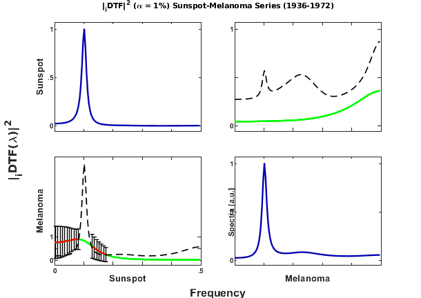

ANDREWS & HERZBERG (1985)b - Sunspot-Melanoma 1936-1972 Series DTF Demo
Contents
- Data File: skin.dat
- Causality Analysis using Directed Transfer Function (DTF)
- Additional References
- Retrieving data set for analysis from sunmeladat.m m-file
- MVAR model estimation
- Granger causality test (GCT) and instantaneous GCT
- Original definition of DTF estimation
- DTF Matrix Layout Plotting
- Generalized DTF or Directed Coherence (DC) estimation and analysis parameters
- Generalized DTF or DC Matrix Layout Plotting
- Repeating analysis for iDTF
- iDTF Matrix Layout Plotting
- Plotting the DTF p-values in the frequency domain
Data File: skin.dat
This data is from Andrews and Herzberg. D. F. Andrews, A. M. Herzberg. (1985) Data: A Collection of Problems from Many Fields for the Student and Research Worker. Springer, New York.
"The aetiology of melanoma is complex and may include the influences of trauma, heredity and hormonal activity. In particular, exposure to solar radiation may be involved in the pathogenesis of melanoma. Melanoma is more common in fair-skinned individuals and most frequent in skin sites exposed to the sun. In white populations melanoma is more common in areas closer to the equator where the intensity of solar radiation is higher. Data from various parts of the world suggest that the incidence of melanoma is increasing. The data below, giving age-adjusted melanoma incidence, are from the Connecticut Tumor Registry from 1936-1972. Connecticut has the longest record of state population-based cancer statistics in the United States of America. The data also includes the sunspot relative number. Houghton, Munster and Viola (1978) have shown that the age-adjusted incidence rate for malignant melanoma in the state of Connecticut has risen since 1935 and that superimposed on the rise are 3-5 year periods in which the rise in the rate of incidence is excessive. These periods have a cycle of 8-11 years and follow times of maximum sunspot activity. The relationship between solar cycles and melanoma supports the hypothesis that melanoma is related to sun exposure and provides evidence that solar radiation may trigger the development of clinically apparent melanoma. The columns are the year, male incidence, total incidence, and sunspot relative index. The incidence are rates per 100,000." (Andrews and Herzberg, 1985)
Below is the contents of the file skin.dat:
- Year % 1936-1972
- ANNUAL MALE MELANOMA INCIDENCE(AGE-ADJUSTED PER 10**5) CONNECTICUT
- ANNUAL TOTAL MELANOMA INCIDENCE(AGE-ADJUSTED PER 10**5) CONNECTICUT
- ANNUAL SUNSPOT RELATIVE NUMBER
Causality Analysis using Directed Transfer Function (DTF)
In this example, ANNUAL SUNSPOT RELATIVE NUMBER and TOTAL MELANOMA INCIDENCE(AGE-ADJUSTED PER 10**5) in the state of CONNECTICUT will be considered
Additional References
[0] Andrews, D.F., Herzberg, A.M. (1985). Incidence of Malignant Melanoma After Peaks of Sunspot Activity. In: Data. Springer Series in Statistics. Springer, New York, NY. https://doi.org/10.1007/978-1-4612-5098-2_33
[1] M.V. Viola, A. Houghton, E.W. Munster. Solar cycles and malignant melanoma. Medical Hypotheses 5:153--160, 1979. https://doi.org/10.1016/0306-9877(79)90067-7
[2] A. Houghton, E.W. Munster and M.V. Viola. Increased incidence of malignant melanoma after peaks of sunspot activity. The Lancet, 311:759--760, 1978. https://doi.org/10.1016/S0140-6736(78)90869-3
% (C) Koichi Sameshima & Luiz A. Baccala, 2021. See file license.txt in % installation directory for licensing terms. format short warning('off'); more off disp(repmat('=',1,100)) disp(' Andrews and Herzberg''s Sunspot and Melanoma 1936-1972 Data'); disp(' Sunspot --> Melanoma or other way?'); disp(repmat('=',1,100)) flgDataPlot = 1;
====================================================================================================
Andrews and Herzberg's Sunspot and Melanoma 1936-1972 Data
Sunspot --> Melanoma or other way?
====================================================================================================
Retrieving data set for analysis from sunmeladat.m m-file
x=sunmeladat([4 3]); chLabels={'Sunspot';'Melanoma'};
u = x;
nPoints = length(u);
Plotting sunspot and melanoma series
if flgDataPlot year=sunmeladat(1); % Year variable h1=figure; set(h1,'NumberTitle','off','MenuBar','none', ... 'Name','Andrews & Herzberg''s Sunspot-Melanoma Series (1936-1972)') h = subplot(311); plot(year,u(:,1),'o:r'); title('Sunspot series'); grid set(h,'XLim', [1935 1975], ... %'YLim',ylim, ... 'XTick',[1935:5:1975], ... 'XTickLabel',[' ';' ';' ';' ';' ';' ';' ';' ';' ']); h = subplot(312); plot(year,u(:,2),'.:'); xlabel(''); title('Melanoma series');grid set(h,'XLim', [1935 1975], ... %'YLim',ylim, ... 'XTick',[1935:5:1975], ... 'XTickLabel',[' ';' ';' ';' ';' ';' ';' ';' ';' ']); h = subplot(313); plot(year,detrend(u(:,2)),'.:'); xlabel('year'); set(h,'XLim', [1935 1975]) title('Detrended melanoma series') grid; hold on; %pause(1) h2=figure; set(h2,'NumberTitle','off','MenuBar','none', ... 'Name','Andrews & Herzberg''s Sunspot-Melanoma Series (1936-1972)') u2=u(:,2); u2=detrend(u2); h = subplot(211); plot(year,(u2-mean(u2))/std(u2),'b*:',... year,(u(:,1)-mean(u(:,1)))/std(u(:,1)),'ro-'); set(h,'XLim', [1935 1975]) title('Melanoma & Sunspot: Standardized series') legend('Melanoma','Sunspot');grid [uxcorr,lag]=xcorr(u2,u(:,1),'coeff'); subplot(212); plot(lag,uxcorr,'o--'); xlabel('lag(year)'); title('Normalized cross-correlation function'); axis([-20 20 -1 1]); grid; hold on end
Note the cross-correlation peak at 2-year time lag.
Data pre-processing: detrending and standardization options
flgDetrend = 1; % Detrending the data set flgStandardize = 0; % No standardization [nChannels,nSegLength] =size(u); if nChannels > nSegLength u = u.'; [nChannels,nSegLength]=size(u); end if flgDetrend for i=1:nChannels, u(i,:)=detrend(u(i,:)); end disp('Time series were detrended.'); end if flgStandardize for i=1:nChannels, u(i,:)=u(i,:)/std(u(i,:)); end disp('Time series were scale-standardized.'); end alpha = 0.01; fs= 1;
Time series were detrended.
MVAR model estimation
maxIP = 4; % maximum model order to consider. alg = 1; % 1: Nutall-Strand MVAR estimation algorithm; % % 2: minimum least squares methods; % % 3: Vieira Morf algorithm; % % 4: QR ARfit algorith. criterion = 1; % Criterion for order choice: % % 1: AIC, Akaike Information Criteria; % % 2: Hanna-Quinn; % % 3: Schwarz; % % 4: FPE; % % 5: fixed order given by maxIP value. disp('Running MVAR estimation routine...') [IP,pf,A,pb,B,ef,eb,vaic,Vaicv] = mvar(u,maxIP,alg,criterion); disp(['Number of channels = ' int2str(nChannels) ' with ' ... int2str(nSegLength) ' data points; MAR model order = ' int2str(IP) '.']);
Running MVAR estimation routine... maxOrder limited to 4 IP=1 vaic=418.156614 IP=2 vaic=415.350982 IP=3 vaic=409.454496 IP=4 vaic=411.220477 Number of channels = 2 with 37 data points; MAR model order = 3.
Testing for adequacy of MAR model fitting through Portmanteau test
h = 20; % testing lag MVARadequacy_signif = 0.05; % VAR model estimation adequacy significance % level aValueMVAR = 1 - MVARadequacy_signif; % Confidence value for the testing flgPrintResults = 1; [Pass,Portmanteau,st,ths] = mvarresidue(ef,nSegLength,IP,aValueMVAR,h,... flgPrintResults);
====================================================================================================
MVAR RESIDURES TEST FOR WHITENESS
----------------------------------------------------------------------------------------------------
Good MAR model fitting! Residues white noise hypothesis NOT rejected.
Pass = 0.025
st = 85.8928
Granger causality test (GCT) and instantaneous GCT
gct_signif = 0.01; % Granger causality test significance level igct_signif = 0.01; % Instantaneous GCT significance level flgPrintResults = 1; % Flag to control printing gct_alg.m results on command window. [Tr_gct, pValue_gct] = gct_alg(u,A,pf, gct_signif,flgPrintResults); [Tr_igct, pValue_igct] = igct_alg(u,A,pf,igct_signif,flgPrintResults);
====================================================================================================
GRANGER CAUSALITY TEST
----------------------------------------------------------------------------------------------------
Connectivity matrix:
NaN 0
1 NaN
Granger causality test p-values:
NaN 0.0796
0.0000 NaN
====================================================================================================
INSTANTANEOUS GRANGER CAUSALITY TEST
----------------------------------------------------------------------------------------------------
Instantaneous connectivity matrix:
NaN 0
0 NaN
Instantaneous Granger Causality test p-values:
NaN 0.0762
0.0762 NaN
>>>> Instantaneous Granger Causality NOT detected.
====================================================================================================
Original definition of DTF estimation
DTF analysis results are saved in c structure. See asymp_dtf.m or issue
>> help asymp_dtf
command for more detail.
nFreqs = 128; metric = 'euc'; % euc = original DTF; % diag = generalized DTF or DC; % info = information DTF or iDTF. alpha = 0.01; c = asymp_dtf(u,A,pf,nFreqs,metric,alpha); % Estimate DTF and asymptotic statistics c.pvaluesgct = pValue_gct; % Necessary for printing GCT with xplot c.Tragct = Tr_gct;
DTF Matrix Layout Plotting
% ---------------Plotting options flag setting----------------------------- % [1 2 3 4 5 6 7] flgPrinting=[1 1 1 2 2 0 1]; % | | | | | | 7 Spectra(0: w/o SS; 1: Linear; 2: log-scale) % | | | | | 6 Coherence % | | | | 5 Plot lower confidence limit % | | | 4 Plot upper confidence limit % | | 3 Significant DTF(w) in red line % | 2 Patnaik threshold level in black dashed-line % 1 DTF in green line %-------------------------------------------------------------------------- flgColor = 0; w_max=fs/2; strBarTitle = 'Andrews & Herzberg''s Sunspot-Melanoma Series (1936-1972)'; strTitle = 'Sunspot-Melanoma Series (1936-1972)'; [h1,hxlabel,hylabel] = xplot(strBarTitle,c,... flgPrinting,fs,w_max,chLabels,flgColor); xplot_title(alpha,metric,'dtf',strTitle);
It is important to note that the time series were not standardized, and the variance of sunspot series is much larger than that of the melanoma's series.
In this case, the original DTF from melanoma (small variance) to sunspot (large variance) estimate is close to unit (large), but not significant, while in opposite direction it is very small and significant (see red line plot).
Proper "scale" for original DTF estimates could be attained by standardizing the time series, i.e scaling to have unit variance and zero mean, but it is preferred using either generalized DTF or information DTF.
Following figure shows in more properly scaled magnitude of DTF from sunspot to melanoma, which one would expect some causal influence of radiation intensity influence on skin cancer incidence.
flgScale = 3; flgMax = 'all'; flgSignifColor = 3; [h2,hxlabel,hylabel] = xplot(strBarTitle,c,flgPrinting,fs,w_max,chLabels, ... flgColor,flgScale,flgMax,flgSignifColor); xplot_title(alpha,metric,'dtf',strTitle);
One interesting aspect of asymptotic statistics you may notice is that it gives a proper and consistent inference for all three forms of DTF (DTF|DC|iDTF).
This is an indication of robustness of the algorithm based on asymptotic statistics implemented in the AsympPDC Package.
Generalized DTF or Directed Coherence (DC) estimation and analysis parameters
DC analysis results are saved in d structure.
metric = 'diag'; % euc = original DTF; % diag = generalized DTF or DC; % info = information DTF or iDTF d = asymp_dtf(u,A,pf,nFreqs,metric,alpha); % Estimate DTF and asymptotic statistics flgColor = 0;
Generalized DTF or DC Matrix Layout Plotting
[h3,hxlabel,hylabel] = xplot(strBarTitle,d,flgPrinting,fs,w_max,chLabels,flgColor);
xplot_title(alpha,metric,'dtf',strTitle);

Note that the peak of DC in frequency coincides with the peack or Sunspot and melanoma series power spectra, which corresponds to approximately 11-year Sun's activity cycle period, however, on the contrary to PDC inference, around the peak itself DC is not significant.
Repeating analysis for iDTF
iDTF analysis results are saved in e structure.
metric = 'info'; alpha = 0.01; e = asymp_dtf(u,A,pf,nFreqs,metric,alpha); % Estimate iDTF and asymptotic statistics
iDTF Matrix Layout Plotting
flgColor = 0; flgPrinting=[1 1 1 3 0 0 1]; flgScale = 2; flgMax = 'all'; flgSignifColor = 3; [h4,hxlabel,hylabel] = xplot(strBarTitle,e,flgPrinting,fs,w_max,chLabels, ... flgColor,flgScale,flgMax,flgSignifColor); xplot_title(alpha,metric,'dtf',strTitle);
Note that iDTF and DC's magnitude patterns are similar, but not equal.
Plotting the DTF p-values in the frequency domain
flgPrinting=[1 1 1 3 1 1 1]; [h5,hxlabel,hylabel] = xplot_pvalues(strBarTitle,c,flgPrinting,fs,w_max, ... chLabels,flgColor); xplot_title(alpha,metric,'p-value iDTF',strTitle);
End of Sunspot-Melanoma series analysis example.